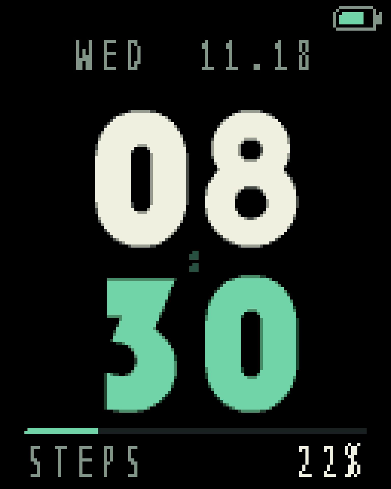
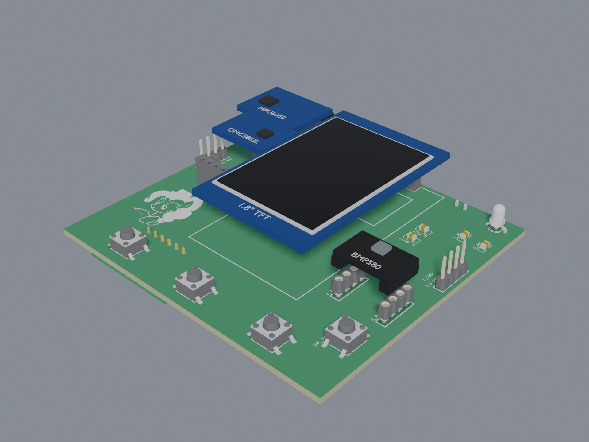
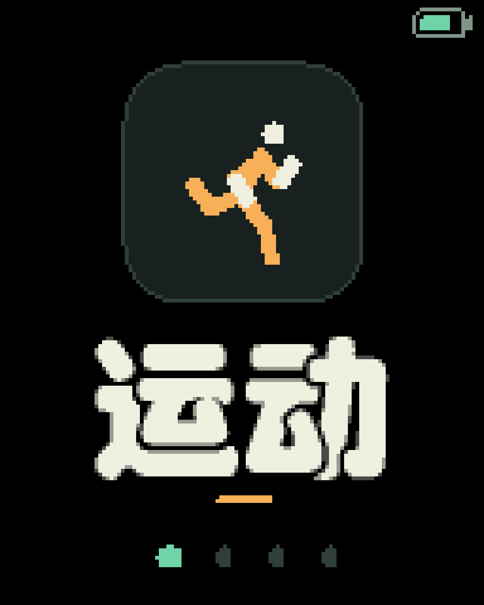
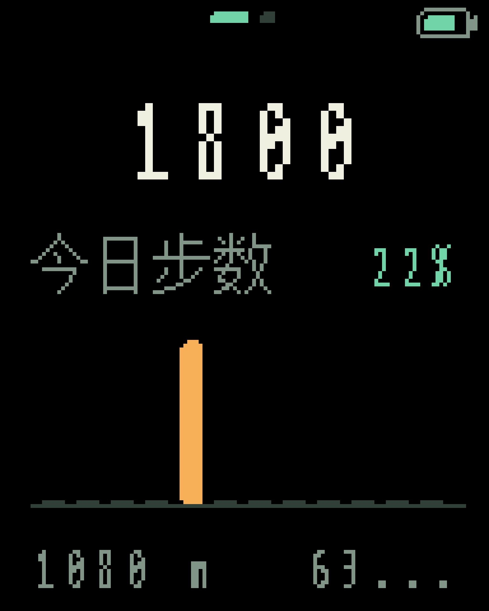
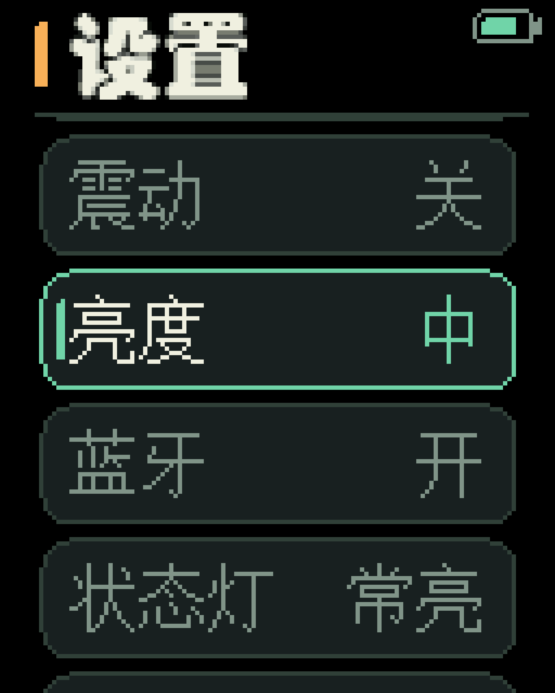
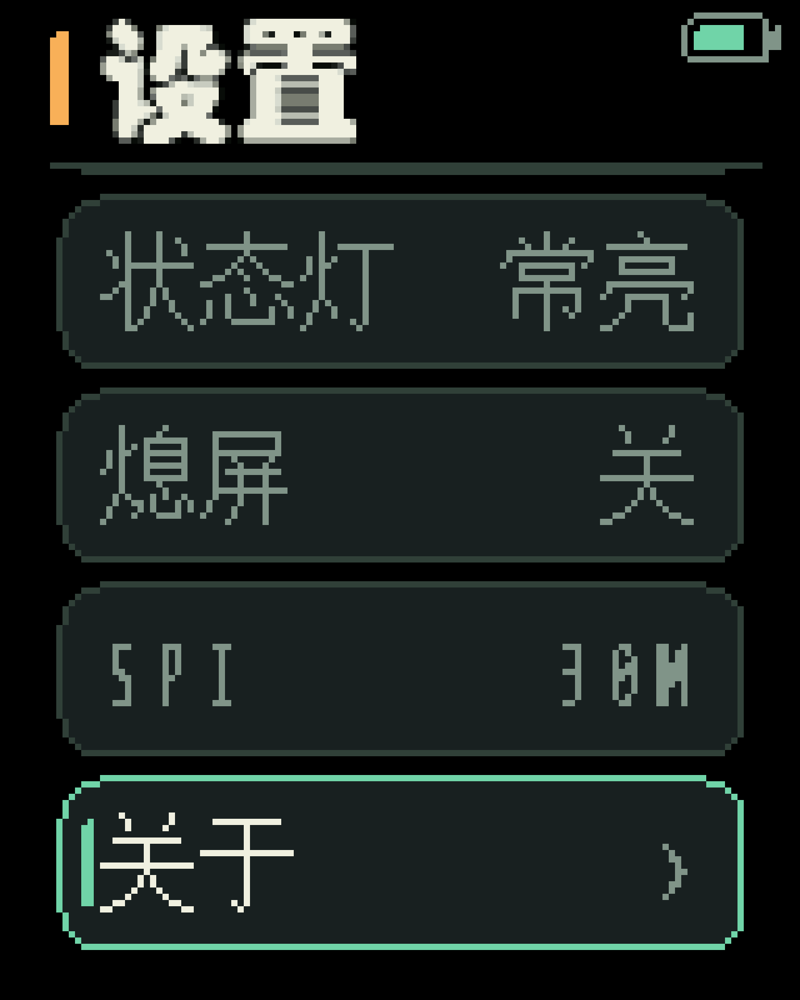

标题字体仍会变
消息列表推进详情、再返回，以及随后切到运动、设置、音乐时，华文琥珀标题仍会掉成小点阵。查不到片外标题字形时，ui_song_draw() 会走小字回退。这一版不能当成字体问题已经修好。
AT32F421K8T7 · CORTEX-M4 @ 120 MHz · BARE-METAL NO RTOS
这是一块没有操作系统的 Cortex-M4 手表。主循环每 16 ms 跑一帧：收蓝牙、采样传感器、推进动画、按当前页面决定哪一块程序和图片可以占用 SRAM，把这一帧的绘图命令录下来，再只把变过的 4 行横条通过 SPI DMA 送到屏上。静止时一条都不送。

数字表盘：纸色小时、薄荷分钟、顶栏电量，静态不重绘 0 字节 SPI。
01 · HARDWARE REALITY & REAL SCREEN GALLERY
一切架构约束都从硬件出发：AT32F421K8T7 只有 64 KB Flash 与 16 KB SRAM，挂着一块带非对称窗口偏置的 128×160 ST7735S 屏，一条 400 kHz I2C1 总线共用三颗器件。请以现行固件为准，不再沿用早期文档的旧引脚与 240×240 假定。

等轴测视图：1.8" TFT（SPI1）、MPU6050 与 QMC5883 模块、四颗轻触开关（KEY1/2/3 + RST）。
| 功能模块 | 引脚 | 实际运行方式 |
|---|---|---|
| 屏 SCK / MOSI | PA5 / PA7 | SPI1 主机 Mode 0 MSB，30 MHz（/4）或 15 MHz（/8），像素走 DMA1 Ch3 |
| 屏 DC / RES / CS | PA6 / PA4 / 接地 | DC 低=命令 高=像素；CS 模块内部接地 |
| 屏背光 PWM | PB0 | TMR3 CH3，20 kHz（120 MHz / 6000），占空 80 / 160 / 255 / 熄屏 0 |
| 蓝牙串口 | PA2 TX / PA3 RX | USART2 115200 8N1，中断收进 256 B 环形队列 |
| 蓝牙状态 / 按键 | PB1 · PA11/12/15 | PB1 下拉输入；三按键上拉按下为低（上一项/确定/下一项） |
| I2C1 传感器与存储 | PA9 SCL / PA10 SDA | 硬件 I2C1 400 kHz（头文件旧注仍写软件 I2C），外部 10 kΩ 上拉 |
| 挂接器件（7 位地址） | 0x68 · 0x2C · 0x50 | MPU6050（0x68/6B）、QMC5883P（0x2C）、32KB 24C256（0x50..57） |
| 电池分压 / 麦克风 | PA1 / PA0 | PA1=ADC1_IN1（100k+100k 读数×2）；PA0 模拟态当前未采样 |
| 1207 马达 / 状态灯 | PA8 / PB3 | PA8 经 AO3400A 驱动马达（函数名 beep）；PB3 关/亮/1Hz 闪 |
| 未接入外设 | 0x46 · PB6 / PB5 | BMP580 接口固定返回 0；MPU_INT/MAG_DRDY 未走中断，靠 20ms 轮询 |
点击任意一张实机截图或动图，在检视器中查看像素细节与底层调度原理。
华文琥珀 1:1 字体存在片内 Flash。小时用暖纸色 #F0F1E4，分钟用薄荷 #73D4AE；顶部星期与日期、底部步数进度条。静止时每帧脏条带数为 0，SPI 传输 0 字节。
02 · THREE MEMORIES & SCENARIO D
片内 Flash 64 KB、片内 SRAM 16 KB、外置 I2C 32 KB。程序把“不常变的绘图逻辑和点阵”请出片内 Flash，再借一片 12,608 B 的静态池和双端外置池周转。
地址 0x0000–0x7FFF（24C256 / FM24C256 @ 0x50）。前 768 B 是掉电不丢的「设置双槽」与「目录双槽」，后面 32,000 B 池子从低端放表盘/Thumb 小程序，从高端倒放媒体点阵与最多 20 条消息，避免两边互切碎块。
03 · SCENARIO A · 16 MS FRAME BUDGET & COOPERATIVE HOOK
没有 RTOS，没有线程调度器。整个主循环就是 for (;;) ui_frame();，时间节奏全靠 16 ms 节拍与协作钩子 port_service() 维持。
| 中断源 | 做什么 | 绝不做什么 |
|---|---|---|
| SysTick (1ms) | 毫秒计数 + 推马达波形 | 不画界面、不读 I2C |
| USART2 RX | 字节塞进 256 B 环形队列 | 不原地解析帧 |
| DMA1_CH3_2 | 仅关传输完成中断使能 | 不关 SPI（主循环轮询标志） |
04 · SCENARIO B · DIRTY BANDS, PING-PONG DMA & SELF-HEAL
128×160 RGB565 全屏要 40,960 B，片内只有 16 KB SRAM，根本不存在全屏帧缓冲。屏幕被切成 40 条高 4 行的水平带，算得出每个图元的左右包围盒，但发送时一律拉成 x=0、全宽 128 列。
每帧最多录 80 条命令（640 B UTF-8 槽）。prepare() 逐条算哈希与变换后包围盒，与上一帧同序号比对：
变脏条带：0 / 40 · 送出：0 B（0%）
05 · SCENARIO C · DYNAMIC SRAM ARENA & THUMB APPLETS
整片 SRAM 只有 16,384 B，静态区已占 14,656 B，栈头顶余 1,728 B。主页四个图标并不是四份常驻代码——它们是放在外置池里的位置无关 Thumb 小程序，谁打开谁就换上那块空余 SRAM。
| 动态池内驻留对象 | 来源 / 规模 | 释放时机与关键时序陷阱 |
|---|---|---|
| 渲染基础设施（钉死在池底） | ~3.8 KB（双缓冲 2048 B + items 80 + strs 640 B + history 80 + dirty 40 + 4 动画槽） | 上电即分配，永不释放。所有页面共享这套命令队列与乒乓缓冲。 |
| 主菜单图标 SYS1 & 华文琥珀 SHD1 | SYS1 ≈ 2.7 KB；SHD1 1,640 B（索引 280 + 环形 1360） | 必须先抢 SYS1 再抢 SHD1；且打开应用缩放 < 70/255 时不能释 SYS1，否则图标变白块占位字。 |
| 表盘模块 ANL1 / 运动 SPR1 | ANL1 ≤ 3072 B；SPR1 ≤ 4608 B（实际约 3.4 KB） | SPR1 柱状图揭幕从「装完那一帧」起算，不被 I2C 读时间吃掉；碎片时先退掉 SHD1 和字模缓存再试。 |
| 三维指南针 C3D1（独立指针 c3d_buf） | ≤ 4096 B | 关闭 SHD1 并可先拆掉 dyn_buf 给它腾连续块；若仍失败则退回 SPR1 里的 2D 罗盘。 |
| 音乐 MUS1（独立指针 mus_buf） | ≤ 4096 B + 128×32 点阵（512 B） | 离开音乐页立即释放 mus_buf 与媒体点阵缓冲。 |
| 消息列表 / 详情点阵 | 列表窗口 5 行（1760 B）；详情 128×160 1bpp（2560 B） | 详情点阵进哪条才从外置拉哪条，不占满 20 条；进详情释列表，退列表再恢复并通知手机。 |
| 设置 → 关于（彩图 + 三行简介） | 简介 ~1.3 KB（先） + 彩图 ~2.8 KB（后） | 等 SYS1/音乐/消息释完再在推进第一帧前备齐；必须先字后图，图抢不到可退回逐行流式读。 |
06 · SCENARIO E · BUTTON TO PIXEL & 4-SLOT INTEGER ANIMATION
三颗物理按键只有电平没有硬件消抖；导航由三层整数缓动驱动（最多同时跑 4 个动画槽），且只有两页交界或放大窗口扫过的 4 行横带才会进入 SPI DMA。
长按 KEY2 ≥ 450 ms 判定为返回，松开不再重复触发短按确定；KEY1/KEY3 按住 320 ms 后每 115 ms 连发一次；熄屏状态下任意键只唤醒背光，该键动作被吞掉。




07 · SCENARIO F · 50 HZ SENSORS, POWER & A5 LINK PROTOCOL
所有传感器在 port_service() 里以 20 ms（50 Hz） 轮询，且只在屏 DMA 空闲时发生；连续约 1 秒（50 次）失败自动打 9 个 SCL 时钟解锁总线并重写寄存器。
07b · STILL OPEN AFTER e364153
最新提交 e364153（2026-11-18）已经把标题缓存钉在动态池顶端，并让消息详情按条从外置存储流式贴出，固件编到 56132 字节后烧过。实机验收没有通过。下面三项以这次提交里记下的结果为准。
消息列表推进详情、再返回，以及随后切到运动、设置、音乐时，华文琥珀标题仍会掉成小点阵。查不到片外标题字形时，ui_song_draw() 会走小字回退。这一版不能当成字体问题已经修好。
手表上的「清空通知」清不掉已经进来的消息，通知会留在表上。列表协议和清空函数都在，失效点还没有定位到是手表没擦掉外置槽，还是手机又推了回来。
手机端的通知监听和重连已经改过，分析器和测试是过的。还没有拿一部安卓手机连上这块表，确认通知能到手表、清空之后不再弹回来。
08 · GIT HISTORY, BUG POSTMORTEMS & CODE AUDIT
从 11 月 11 日到 18 日。这套架构里全宽脏条带、缩放 70 以下保留图标、I2C 不走 DMA、不写 MPU 信号复位，都是实机撞墙之后改出来的。上面一节是最新一次提交之后仍然开着的问题。
09 · CONSTANTS & SOURCE CODE MAP
本页所有数字均对照 D:\dev\class 源码与最近一次 at32/obj/watch.map 核实。可直接按关键字过滤下表。
| 关键常量 | 现行固件实值 |
|---|---|
| 屏幕与像素格式 | 128 × 160 · RGB565 · ST7735S |
| 条带切分与尺寸 | 4 行/条 · 40 条 · 1,024 B/条 · 全屏 40,960 B |
| 帧预算与 SPI 时钟 | 16 ms · SPI1 30 MHz (默认) 或 15 MHz |
| 背光 PWM | 20 kHz · 占空 80 / 160 / 255 / 熄屏 0 |
| 片内 Flash (55+9 KB) | 镜像 55,160 B (余 1,160 B) · 热槽 0x0800DC00 (9,216 B) |
| 片内 SRAM (16 KB) | 静态 14,656 B · 动态池 12,608 B (32 块) · 栈余 ~1,728 B |
| 命令录制与动画槽 | 80 条命令 · 640 B 字符串 · 24 图引用 · 4 动画槽 |
| 按键与息屏周期 | 长按 450 ms · 连发 320/115 ms · 息屏 0/30/60/120/300 s |
| 传感器与计步 | 轮询 20 ms · 电池 500 ms · 步间隔 ≥250 ms · 步幅 600 mm · 目标 8000 |
| 外置 32 KB 与模块头 | 池 32,000 B (0x0300起) · 20 消息 · SYS1 ANL1 SPR1 MUS1 C3D1 ABT2 ATD1 |
| 底层行为 | 对应源码文件 |
|---|---|
| 主循环入口 | at32/src/main.c |
| 时钟/SPI DMA/帧节拍/服务 | at32/port.c |
| 引脚定义 / I2C1 主机 | at32/bsp/board_config.h · i2c_bus.c |
| 背光/灯/电池/马达 | at32/bsp/led_bl.c · adc_bat.c · beep.c |
| 链接脚本与 9 KB 热槽 | at32/AT32F421x8_FLASH.ld |
| 唯一硬件边界 | ui/hal.h |
| 一帧调度/五页/互斥调度 | ui/src/ui_app.c (ui_frame, msg_link_sync) |
| 命令录制/脏条带/乒乓刷屏 | ui/src/ui_draw.c (describe, prepare, ui_draw_flush) |
| SRAM 池 / 整数缓动 | ui/src/ui_mem.c · ui_anim.c · ui_menu.c |
| 协议/外置池/Thumb 装载 | ui/src/link.c · ui/pic_mod.h · ui/compass3d.h |
| 定点九轴 / 计步抬腕 | ui/src/imu9.c · sport.c · mpu6050.c · qmc5883l.c |